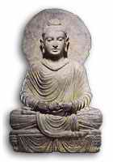

Seratus Tokoh yang Paling Berpengaruh dalam
Sejarah
4. BUDDHA (563 SM - 483 SM)
Gautama Buddha nama aslinya pangeran Siddhartha pendiri Agama Buddha, salah satu dari agama terbesar di dunia. Putra raja Kapilavastu, timur laut India. berbatasan dengan Nepal. Siddhartha sendiri (marga Gautama dari suku Sakya) konon lahir di Lumbini yang kini termasuk wilayah negara Nepal. Kawin pada umur enam belas tahun dengan sepupunya yang sebaya. Dibesarkan di dalam istana mewah, pangeran Siddhartha tak betah dengan hidup enak berleha-leha, dan dirundung rasa tidak puas yang amat. Dari jendela istana yang gemerlapan dia menjenguk ke luar dan tampak olehnya orang-orang miskin terkapar di jalan-jalan, makan pagi sore tidak, atau tidak mampu makan sama sekali. Hari demi hari mengejar kebutuhan hidup yang tak kunjung terjangkau bagai seikat gandum di gantung di moncong keledai. Tarolah itu yang gembel. Sedangkan yang berpunya pun sering kehinggapan rasa tak puas, waswas gelisah, kecewa dan murung karena dihantui serba penyakit yang setiap waktu menyeretnya ke liang lahat. Siddhartha berpikir, keadaan ini mesti dirobah. Mesti terwujud makna hidup dalam arti kata yang sesungguhnya, dan bukan sekedar kesenangan yang bersifat sementara yang senantiasa dibayangi dengan penderitaan dan kematian.
Tatkala berumur dua puluh sembilan tahun, tak lama sesudah putra pertamanya lahir, Gautama mengambil keputusan dia mesti meninggalkan kehidupan istananya dan mengharnbakan diri kepada upaya mencari kebenaran sejati yang bukan sepuhan. Berpikir bukan sekedar berpikir, melainkan bertindak. Dengan lenggang kangkung dia tinggalkan istana, tanpa membawa serta anak-bini, tanpa membawa barang dan harta apa pun, dan menjadi gelandangan dengan tidak sepeser pun di kantong. Langkah pertama, untuk sementara waktu, dia menuntut ilmu dari orang-orang bijak yang ada saat itu dan sesudah merasa cukup mengantongi ilmu pengetahuan, dia sampai pada tingkat kesimpulan pemecahan masalah ketidakpuasan manusia.
Umum beranggapan, bertapa itu jalan menuju kearifan sejati. Atas dasar anggapan itu Gautama mencoba menjadi seorang pertapa, bertahun-tahun puasa serta menahan nafsu sehebat-hebatnya. Akhirnya dia sadar laku menyiksa diri ujung-ujungnya cuma mengaburkan pikiran, dan bukannya malah menuntun lebih dekat kepada kebenaran sejati. Pikir punya pikir, dia putuskan mendingan makan saja seperti layaknya manusia normal dan stop bertapa segala macam karena perbuatan itu bukan saja tidak ada gunanya melainkan bisa bikin badan kerempeng, loyo, mata kunang-kunang, ngantuk, linu, bahkan juga mendekati bego.
Dalam kesendirian yang tenang tenteram dia bergumul dengan perikehidupan problem manusiawi. Akhirnya pada suatu malam, ketika dia sedang duduk di bawah sebuah pohon berdaun lebar dan berbuahkan semacarn bentuk buah pir yang sarat biji segala macam, maka berdatanganlah teka-teki masalah hidup seakan berjatuhan menimpanya. Semalam suntuk Siddhartha merenung dalam-dalam dan ketika mentari merekah di ufuk timur dia tersentak dan berbarengan yakin bahwa terpecahkan sudah persoalan yang rumit dan dia pun mulai saat itu menyebut dirinya Buddha "orang yang diberi penerangan."
Pada saat itu umurnya menginjak tiga puluh lima tahun. Sisa umurnya yang empat puluh lima tahun dipergunakannya berkelana sepanjang India bagian utara, menyebarkan filosofi barunya di depan khalayak siapa saja yang sudi mendengarkan. Saat dia wafat, tahun 483 sebelum Masehi, sudah ratusan ribu pemeluk ajarannya. Meskipun ucapan-ucapannya masih belum ditulis orang tapi petuah-petuahnya dihafal oleh banyak pengikutnya di luar kepala, diwariskan dari satu generasi ke generasi berikutnya lewat mulut semata.
Pokok ajaran Buddha dapat diringkas di dalam apa yang menurut istilah penganutnya "Empat kebajikan kebenaran:" pertama, kehidupan manusia itu pada dasarnya tidak bahagia; kedua, sebab-musabab ketidakbahagiaan ini adalah memikirkan kepentingan diri sendiri serta terbelenggu oleh nafsu; ketiga, pemikiran kepentingan diri sendiri dan nafsu dapat ditekan habis bilamana segala nafsu dan hasrat dapat ditiadakan, dalam ajaran Buddha disebut nirvana; keempat, menimbang benar, berpikir benar, berbicara benar, berbuat benar, cari nafkah benar, berusaha benar, mengingat benar, meditasi benar. Dapat ditarnbahkan Agama Buddha itu terbuka buat siapa saja, tak peduli dari ras apa pun dia, (ini yang membedakannya dengan Agama Hindu).
Beberapa saat sesudah Gautama wafat agama baru ini merambat pelan. Pada abad ke-3 sebelum Masehi, seorang kaisar India yang besar kuasa bernama Asoka menjadi pemeluk Agama Buddha. Berkat dukungannya, penyebaran Agama Buddha melesat deras, bukan saja di India tapi juga di Birma. Dari sini agarna itu menjalar ke seluruh Asia Tenggara, ke Malaysia dan Indonesia.
Angin penyebaran pengaruh itu bukan cuma bertiup ke selatan melainkan juga ke utara, menerobos masuk Tibet, ke Afghanistan dan Asia Tengah. Tidak sampai situ. Dia mengambah Cina dan merenggut pengaruh yang bukan buatan besarnya dan dari sana menyeberang ke Jepang dan Korea.
Sedangkan di India sendiri agama baru itu mulai menurun pengaruhnya sesudah sekitar tahun 500 Masehi malahan nyaris punah di tahun 1200. Sebaliknya di Cina dan di Jepang, Agama Buddha tetap bertahan sebagai agama pokok. Begitu pula di Tibet dan Asia Tenggara agama itu mengalami masa jayanya berabad-abad.
Ajaran-ajaran Buddha tidak tertulis hingga berabad-abad sesudah wafatnya Gautama. Karena itu mudahlah dimaklumi mengapa Agama itu terpecah-pecah ke dalam pelbagai sekte. Dua cabang besar Agama Buddha adalah cabang Theravada-pengaruhnya terutama di Asia Tenggara dan menurut anggapan sebagian besar sarjana-sarjana Barat cabang inilah yang paling mendekati ajaran-ajaran Buddha yang asli-. Cabang lainnya adalah Mahayana, bobot pengaruhnya terletak di Tibet, Cina dan juga di Asia Tenggara secara umum.
Buddha, selaku pendiri salah satu agama terbesar di dunia, jelas layak menduduki urutan tingkat hampir teratas dalam daftar buku ini. Karena jumlah pemeluk Agama Buddha tinggal 200 juta dibanding dengan pemeluk Agama Islam yang 500 juta banyaknya dan satu milyar pemeluk Agama Nasrani, dengan sendirinya pengaruh Buddha lebih kecil ketimbang Muhammad atau Isa. Akan tetapi, beda jumlah penganut -jika dijadikan ukuran yang keliwat ketat- bisa juga menyesatkan. Misalnya, matinya atau merosotnya Agama Buddha di India bukan merosot sembarang merosot melainkan karena Agama Hindu sudah menyerap banyak ajaran dan prinsip-prinsip Buddha ke dalam tubuhnya. Di Cina pun, sejumlah besar penduduk yang tidak lagi terang-terangan menyebut dirinya penganut Buddha dalam praktek kehidupan sehari-hari sebenarnya amat di pengaruhi oleh filosofi agama.
Agama Buddha, jauh mengungguli baik Islam maupun Nasrani, punya anasir pacifis yang amat menonjol. Pandangan yang berpangkal pada tanpa kekerasan ini memainkan peranan penting dalam sejarah politik negara-negara berpenganut Buddha.
Banyak orang bilang bila suatu saat kelak Isa turun kembali ke bumi dia akan melongo kaget melihat segala apa yang dilakukan orang atas namanya, dan akan cemas atas pertumpahan darah yang terjadi dalam pertentangan antar sekte yang saling berbeda pendapat yang sama-sama mengaku jadi pengikutnya. Begitu juga akan terjadi pada diri Buddha. Dia tak bisa tidak akan ternganga-nganga menyaksikan begitu banyaknya sekte-sekte Agama Buddha yang bertumbuhan di mana-mana, saling berbeda satu sama lain walau semuanya mengaku pemeluk Buddha. Narnun, bagaimanapun semrawutnya sekte-sekte yang saling berbeda itu tidaklah sarnpai menimbulkan perang agama berdarah seperti terjadi di dunia Kristen Eropa. Dalam hubungan ini, paling sedikit berarti ajaran Buddha tampak jauh mendalam dihayati oleh pemeluknya ketimbang ajaran-ajaran Isa dalarn kaitan yang sama.
Buddha dan Kong Hu-Cu kira-kira punya pengaruh setaraf terhadap dunia. Keduanya hidup di kurun waktu yang hampir bersamaan, dan jumlah pengikutnya pun tak jauh beda. Pilihan saya menempatkan nama Buddha lebih dulu daripada Kong Hu-Cu dalam urutan disandarkan atas dua pertimbangan: pertama, perkembangan Komunisme di Cina nyaris menyapu habis pengaruh Kong Hu -Cu, sedangkan tampaknya masa depan Buddha masih lebih banyak celah dan pengaruh ketimbang dalam Kong Hu-Cu; kedua, kegagalan ajaran Kong Hu-Cu menyebar luas ke luar batas Cina menunjukkan betapa erat taut bertautnya ajaran Kong Hu-Cu dengan sikap dan tata cara jaman Cina lama. Sebaliknya, ajaran Buddha tak ada mengandung pernyataan ulangan atau mengunyah-ngunyah filosofi India terdahulu, dan Agama Buddha menyebar melangkah batas pekarangan negerinya -India- bersandarkan gagasan tulen Gautama serta jangkauan luas filosofinya.
Seratus Tokoh yang Paling Berpengaruh dalam Sejarah
Michael H. Hart, 1978
Terjemahan H. Mahbub Djunaidi, 1982
PT. Dunia Pustaka Jaya
Jln. Kramat II, No. 31A
Jakarta Pusat